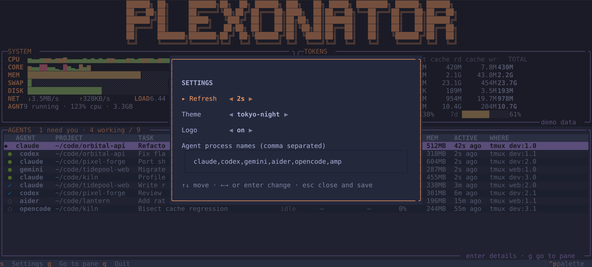

Every agent, in one table
Finds running Claude Code, Codex, Gemini, aider and opencode processes. For each: the project folder, the pane it lives in, CPU, memory, uptime, and when it last did something. Working agents sort to the top.
▚ a terminal dashboard for tmux, cmux and friends
When you run a handful of Claude Code, Codex or other agents side by side, it gets hard to tell which one is working, which one is waiting, and what it is all costing. plexonator sits in one pane and shows you: every agent, your machine's resources, and your token totals.
git clone https://github.com/EmilSuuronen/plexonator && ./plexonator/plexonator.pyLinux and WSL. Needs uv, which fetches Python and the two dependencies on first run.

It only reads: process information and the session logs your agents already write. Nothing is sent anywhere.
Finds running Claude Code, Codex, Gemini, aider and opencode processes. For each: the project folder, the pane it lives in, CPU, memory, uptime, and when it last did something. Working agents sort to the top.
Input, output and cache tokens for today, the last 7 days and all time, read from the Claude Code and Codex session logs on your disk.
CPU history and per-core load, memory, swap, disk, network speed and load average, so you can see when ten agents are too many.
Press s for refresh rate, theme, logo and the list of agent names to look for. Saved to one small config file.
Pick one in the settings screen. Your choice is remembered.
Give it a whole window, or a narrow strip beside your agents. Under 124 columns the panels stack.



One file, no setup. Works on Linux and WSL.
curl -LsSf https://astral.sh/uv/install.sh | shgit clone https://github.com/EmilSuuronen/plexonator && ./plexonator/plexonator.pyset-hook -g session-created 'split-window -h -l 40% ~/plexonator/plexonator.py'Keys: s settings, q quit.